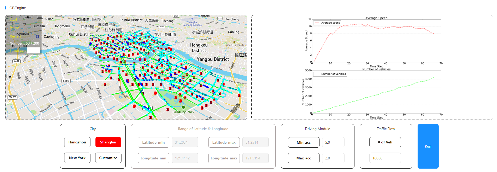

Introduction
CBEngine is a highly efficient microscopic traffic simulator. We support real time simulation of traffic system with more than 100,000 intersections and 1,000,000 vehicles.
Model of CBEngine
CBEngine is a microscopic traffic simulator, which means it provides modelling for each traffic element independently. As demonstrated in the figure below, vehicles, roads, and traffic signals have their own states which iterate by time based on the action they take.
For example, a vehicle drives in the velocity v_t and with the acceleration of a_t at time t. Its velocity at the next time step v_{t+1} is
v_{t+1} = v_t + a_t * 1
CBEngine iterates the state of every traffic elements with an optimized parallelization architecture , thus making the microscopic traffic simulation more efficient.

More advantages of CBEngine
Various of APIs to operate different traffic elements: roads, traffic signals, vehicles, ...
User customization of driving module and routing module.
Pipeline to conduct transformation from map data to road network data file with utility.
Now, use CBEngine to start up your first traffic simulation on large scale traffic system!